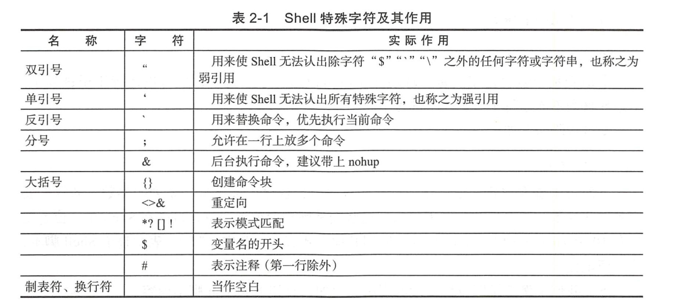

Contents
2. 02.Shell脚本在Devops下的应用¶
2.2. 2.2 Shell基础正则表达式¶
参考玩转shell脚本编程的 正则表达式章节
2.3. 2.3 Shell特殊字符¶

关于位置参数shift的常见用法，例如，脚本publis-hconf依次对后面的IP进行操作，代码如下：
#!/usr/bin/env bash
#usage:xxx
#scripts_name:${NAME}.sh
# author：xiaojian
if [ "$#" >=3 ]; then
shift 1
# echo "此次需要更新的机器IP为$@"
for flat in $@ ; do
echo "此次需要更新的机器IP为$flat"
# 操作动作
done
fi
2.4. 2.4 运行、调试Shell脚本¶
调试Shell脚本
· -n: 不会执行该脚本，仅查询脚本语法是否有问题，并给出错误提示。
· -v：在执行脚本时，先将脚本的内容输出到屏幕上，然后执行脚本。如果有错误，也会给出错误提示。
· -x: 将执行的脚本内容输出显示到屏幕上，这是对调试很有用的参数。
bash -x 调试Shell脚本，bash会先打印出每行脚本，再打印出每行脚本的执行结果，如果只调试其中几行脚本，
可以采用“set -x”和“set +x”把要测试的部分包含进来。示例代码如下：
set -x
脚本部分内容
set +x
set命令最大的优点是，与“bash -x”相比，“set -x”可以缩小调试的作用域，这个功能在工作中是非常有用的功能，可以帮助我们调试变量， 找出Bug的位置并打印。
2.5. 2.5 test语句¶
文件测试运算符常见代码举例如下：
BACKDIR=/data/backup
[ -d ${BACKDIR} ] || mkdir -p ${BACKDIR}
[ -d ${BACKDIR}/${DATE} ] || mkdir -p ${BACKDIR}/${DATE}
[ ! -d ${BACKDIR}/${OLDDATE} ] || rm -rf ${BACKDIR}/${OLDDATE}
2.6. 2.6 Shell应用于Devops开发中音掌握的系统知识点¶
默认情况下，Shell脚本中的命令是串行执行的，必须等到前一条命令执行完毕之后才执行接下来的命令， 但是如果有一大批的命令需要执行，而且相互之间没有影响的情况下，此时就要使用命令的并发执行了。
正常的程序echo_hello.sh代码如下所示：
#!/usr/bin/env bash
#usage:xxx
#scripts_name:${NAME}.sh
# author：xiaojian
for (( VAR = 0; VAR < 5; VAR++ )); do
{
sleep 3
echo "hello,world" >> aa & echo "done!"
}
done
cat aa |wc -l
rm aa
使用time计算脚本的执行时间，命令结果如下：
$ time sh echo_hello.sh
done!
done!
done!
done!
done!
5
real 0m18.873s
user 0m0.091s
sys 0m0.214s
并发执行的代码如下：
#!/usr/bin/env bash
#usage:xxx
#scripts_name:${NAME}.sh
# author：xiaojian
for (( VAR = 0; VAR < 5; VAR++ )); do
{
sleep 3
echo "hello,world" >> aa & echo "done!"
} &
done
# wait 命令有一个很重要的用途就是在Shell的并发编程中，可以在Shell脚本中启动多个后台进程（使用“&”），然后调用wait命令，等待所有后台进程都运行完毕，
# shell脚本再继续向下执行，
wait
cat aa |wc -l
rm aa
使用time计算脚本执行时间，如下：
$ time sh echo_hello2.sh
done!
done!
done!
done!
done!
5
real 0m5.689s
user 0m0.062s
sys 0m0.244s
当多个进程可能会对同样的数据执行操作时，这些进程需要保证其他进程没有在操作， 以免损坏数据，通常，这样的进程会使用一个“锁文件”，也就是创建一个文件告诉别的进程之间在运行， 如果检测到这个文件存在，就认为操作同样数据的进程在工作。这样做有个问题，当进程不小心意外死亡了，没有清理掉那个文件， 只能由用户手工的去清理了。
2.7. 2.7 理解并行和并发¶
目前大部分语言都能瞒住并发执行，当多核CPU出现后，多CPU的场景下开始产生并行的概念。
（1）总体概念
在单CPU系统中，系统调度在某一时刻只能让一个线程运行，虽然这种调试机制具有多种形式（大多数是以时间片轮询为主），
但无论如何，需要通过不断切换需要运行的线程让其运行的方式就称为并发(concurrent)。
在多CPU系统中，可以让两个以上的线程同时运行，这种可以让两个以上的线程同时运行的方式称为并行(parallel)。
CPU到了多核时代，那么就出现了新的概念：并行。
并行是真正细粒度上的同时进行，即同一时间点上同时发生着多个并发；更加确切并且简单地讲就是，每个CPU上运行一个程序， 以达到同一时间点上各个CPU上均在运行一个程序。
并行和并发的具体区别
1）并行是指两个或者多个事件在同一时刻发生，而并发是指两个或多个事件在同一时间间隔发生。
2）并行是在不同实体上的多个事件，而并发是在同一实体上的多个事件。
3）在一台处理器上“同时”处理多个任务，在多台处理器上同时处理多个任务。